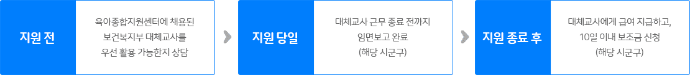
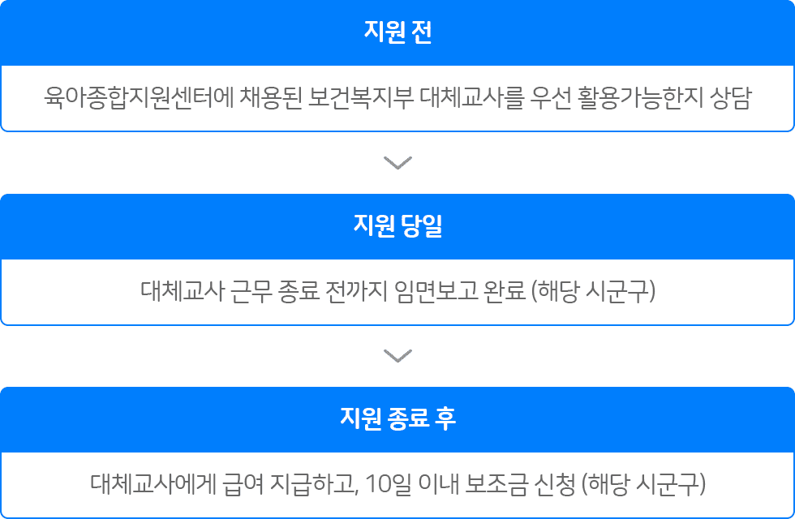

대체교사 지원 사업안내
보육교사가 보수교육(승급·직무), 단기연가, 병가, 경조사 등으로 업무를 수행할 수 없을 때 보육 공백을 해소할 수 있도록 인건비를 지원하는 국비지원사업입니다.
지원대상
채용일 기준으로 현 어린이집에서 장기 근속한 보육교사 우선지원(1년 미만도 신청가능) * 제외대상 : 대표자, 보조교사 등은 미지원
지원형태
월 ~ 금, 1일 8시간 * 대체교사의 근무시간은 1일 8시간이며 대체교사를 파견 받는 어린이집에서는 대체교사의 근무 시간을 준수해주시기 바랍니다.
신청기간
어린이집에 사유 발생시
신청방법
  1. 어린이집에서 대체교사를 직접 채용 및 임면보고 2. 근무 후 어린이집에서 급여 선 지급 3. 매월 말까지 증비서류 첨부하여 어린이집에서 시군구로 보조금 신청 4. 시군구에서 증빙서류 확인 후 어린이집 통장으로 보조금 입금
제출서류 안내
임면 보고 후 사유에 따른 증빙서류(휴가확인서, 입원확인서, 사망진단서 등)와 함께 보조금 신청 서류 시군구로 직접 제출
지원 사유에 따른 일수 안내
| 구분 | 우선순위 | 지원사유 | 지원일수 |
|---|---|---|---|
| 상시 | 1 | 보수교육 (직무교육 우선지원) | 5일 최대 10일 |
| 2 | 연가 (본인 결혼 우선 지원) | 1~10일 최대 10일 |
|
| 3 | 예비군 훈련 | 훈련 기간 | |
| 건강검진 | 1일 | ||
| 긴급 | 최우선 | 아동학대 후속 조치를 위한 긴급보육지원 등 (아동학대로 인한 격리조치 등) |
기간 제한없음 |
| 가족상 | 배우자, 본인 및 배우자의 부모 | 5일 | |
| 본인 및 배우자의 조부모·외조부모 | 3일 | ||
| 자녀와 그 자녀의 배우자 | 3일 | ||
| 본인 및 배우자의 형제자매 | 1일 | ||
| 본인 질병 등 사고 | 감염성 질환, 긴급 수술, 교통사고 등 | 1~5일 최대 10일 |
|
| 모성보호 | 유산 (~11주미만(5일)/12~15주(10일)) |
5일 최대 10일 |
|
| 인공수정 또는 체외수정 등 난임치료 | 1일 최대 3일 |
||
| 임산부 · 영유아 · 미숙아등의 건강관리 등 (산전관리, 건강검진, 예방접종 등) |
1일 최대3일 |
지급액
인건비 : 1인당 1일 82,000원 (실근무일만 지급, 하루 8시간 근무 기준)
대체교사 채용
어린이집에서 직접 채용
유의사항
본 사업은 국비에서 인건비를 지원하는 사업입니다. 대체교사의 근무시간은 8시간 입니다. 대체교사 채용 직후 대체인력 임용보고 하시기 바랍니다. - 대체교사 서류 : 인사기록카드, 보건증(30일 미만 근무 시), 자격증 사본 - 어린이집 서류 : 해당 대체교사의 범죄경력조회, 개인정보활용동의서 사유발생 완료 후 10일 이내 반드시 대체교사 면직신고와 인건비 지원 신청하셔야 합니다.